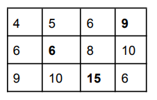

TD n°21 - Exercices BAC 2
| Thème : BAC | |
|---|---|
| 22 | TD : Exercices Divers BAC - Programmation |
Sujet 4 : la programmation en général et la récursivité en particulier.
On considère un tableau de nombres de \(n\) lignes et \(p\) colonnes.
Les lignes sont numérotées de 0 à \(n-1\) et les colonnes sont numérotées de 0 à \(p-1\). La case en haut à gauche est repérée par (0, 0) et la case en bas à droite par \((n - 1, p - 1)\).
On appelle chemin une succession de cases allant de la case (0, 0) à la case \((n - 1, p - 1)\), en n’autorisant que des déplacements case par case : soit vers la droite, soit vers le bas.
On appelle somme d’un chemin la somme des entiers situés sur ce chemin.
Par exemple, pour le tableau T suivant :

- Un chemin est (0, 0), (0, 1), (0, 2), (1, 2), (2, 2), (2, 3) (en gras sur le tableau) ;
- La somme du chemin précédent est 14.
- (0, 0), (0, 2), (2, 2), (2, 3) n’est pas un chemin.
L’objectif de cet exercice est de déterminer la somme maximale pour tous les chemins possibles allant de la case (0, 0) à la case \((n - 1, p - 1)\).
Question 1
On considère tous les chemins allant de la case (0, 0) à la case (2, 3) du tableau T donné en exemple.
- Un tel chemin comprend nécessairement 3 déplacements vers la droite. Combien de déplacements vers le bas comprend-il ?
- La longueur d’un chemin est égal au nombre de cases de ce chemin. Justifier que tous les chemins allant de (0, 0) à (2, 3) ont une longueur égale à 6.
Le chemin comprend 2 déplacements vers le bas
Sachant que les déplacements en diagonale ne sont pas autorisés, il faudra obligatoirement se déplacer 3 fois vers la droite (parcours 4 cases) et 2 fois vers le bas (parcours 2 cases supplémentaires) quel que soit l’ordre de ces déplacements. On aura donc bien un chemin de longueur égale à 6 quel que soit le chemin emprunté.
Question 2
En listant tous les chemins possibles allant de (0, 0) à (2, 3) du tableau T, déterminer un chemin qui permet d’obtenir la somme maximale et la valeur de cette somme.

avec le parcours 0,0 -> 1,0 -> 2,0 -> 2,1 -> 2,2 -> 2,3
on obtient la somme 4 + 2 + 3 + 1 + 5 + 1 = 16 qui est la somme maximale.
Question 3
On veut créer le tableau T’ où chaque élément T’[i][j] est la somme maximale pour tous les chemins possibles allant de (0, 0) à \((i, j)\).
- Compléter et recopier sur votre copie le tableau
T’donné ci-dessous associé au tableau

- Justifier que si \(j\) est différent de 0, alors :
T’[0][j] = T[0][j] + T’[0][j-1]

La somme obtenue à la colonne \(j\) est égale à la somme obtenue à la colonne \(j-1\) (à gauche de \(j\)) plus la valeur de la case \(0,j\) (puisque l’on peut uniquement aller à droite) d’où T'[0][j] = T[0][j] + T'[0][j-1]
Question 4
Justifier que si \(i\) et \(j\) sont différents de 0, alors : T’[i][j] = T[i][j] + max(T’[i-1][j], T’[i][j-1]).
Quand on se trouve à la case \((i,j)\), on vient :
- soit de la case \((i-1,j)\) (case située au-dessus de \((i,j)\)),
-
soit de la case \((i, j-1)\) (case située à gauche de \((i,j)\)).
Donc on doit ajouter à la valeur de la caseT[i][j] -
soit la somme obtenue à la case \((i-1,j)\),
- soit la somme obtenue à la case \((i, j-1)\) (on prendra la somme maximum).
d’où :T'[i][j] = T[i][j] + max(T'[i-1][j], T'[i][j-1])
Question 5
On veut créer la fonction récursive somme_max ayant pour paramètres un tableau T, un entier \(i\) et un entier \(j\). Cette fonction renvoie la somme maximale pour tous les chemins possibles allant de la case (0, 0) à la case \((i, j)\).
- Quel est le cas de base, à savoir le cas qui est traité directement sans faire appel à la fonction somme_max ? Que renvoie-t-on dans ce cas ?
- À l’aide de la question précédente, écrire en Python la fonction récursive
somme_max. - Quel appel de fonction doit-on faire pour résoudre le problème initial ?
Le cas de base est le cas où i = 0 et j = 0, on renvoie alors la valeur T[0][0]
def somme_max(T,i,j):
if i==0 and j==0:
return T[0][0]
else :
if i==0:
return T[0][j]+somme_max(T,0,j-1)
elif j==0:
return T[i][0]+somme_max(T,i-1,0)
else:
return T[i][j]+max(somme_max(T,i-1,j), somme_max(T,i,j-1))
Pour résoudre le problème initial, on doit effectuer l’appel suivant : somme_max(T, 2, 3)
Sujet 5 : la programmation en général et la récursivité en particulier.
Cet exercice porte sur la programmation en général et la récursivité en particulier.
On s’intéresse dans cet exercice à un algorithme de mélange des éléments d’une liste.
Question 1.
Pour la suite, il sera utile de disposer d'une fonction echange qui permet d'échanger dans une liste lst les éléments d'indice i1 et i2.
Expliquer pourquoi le code Python ci-dessous ne réalise pas cet échange et en proposer une modification.
def echange(lst, i1, i2):
lst[i2] = lst[i1]
lst[i1] = lst[i2]
Prenons un exemple où au départ on a : lst[i1] = 3 et lst[2] = 8
Après la ligne lst[i2] = lst[i1], nous avons lst[i2] = 3
Après la ligne lst[i1] = lst[i2], nous avons lst[i1] = 3
Le résultat attendu était lst[i1] = 8 et lst[2] = 3, le résultat obtenu est lst[i1] = 3 et lst[2] = 3, le code Python proposé ne réalise pas l’échange attendu.
Il faut utiliser une variable temporaire pour que cela fonctionne :
temp = lst[i2]
lst[i2] = lst[i1]
lst[i1] = temp
Question 2.
La documentation du module random de Python fournit les informations cidessous concernant la fonction randint(a,b) :
Renvoie un entier aléatoire N tel que a <= N <= b. Alias pour randrange(a,b+1).
□ 0 □ 1 □ 3.5 □ 9 □ 10 □ 11
Les valeurs qui pourront être renvoyées par randint(0, 10) sont : 0, 1, 9 et 10
Question 3.
Le mélange de Fischer Yates est un algorithme permettant de permuter aléatoirement les éléments d'une liste. On donne ci-dessous une mise en œuvre récursive de cet algorithme en Python.
from random import randint
def melange(lst, ind):
print(lst)
if ind > 0:
j = randint(0, ind)
echange(lst, ind, j)
melange(lst, ind-1)
a. Expliquer pourquoi la fonction melange se termine toujours.
b. Lors de l’appel de la fonction melange, la valeur du paramètre ind doit être égal au plus grand indice possible de la liste lst.
Pour une liste de longueur ݊, quel est le nombre d'appels récursifs de la fonction melange effectués, sans compter l’appel initial ?
c. On considère le script ci-dessous :
lst = [v for v in range(5)]
melange(lst, 4)
On suppose que les valeurs successivement renvoyées par la fonction randint sont 2, 1, 2 et 0.
Les deux premiers affichages produits par l'instruction print(lst) de la fonction melange sont :
[0, 1, 2, 3, 4]
[0, 1, 4, 3, 2]
d. Proposer une version itérative du mélange de Fischer Yates.
Nous avons un appel récursif avec melange(lst, ind-1). À chaque appel récursif on soustrait 1 au paramètre ind. Au bout d’un certain nombre d’appels récursifs, le paramètre sera égal à 0, les instructions “contenues” dans le “if” (if ind>0) ne seront plus exécutées et le programme s'arrêtera.
Pour l’appel initial de la fonction nous avons ind = n-1. Pour le premier appel récursif nous avons ind = n-2. Pour le dernier appel récursif nous avons ind = 0, nous avons donc eu n-1 appels récursifs.

def melange(lst):
ind = len(lst)-1
while ind > 0 :
j = randint(0, ind)
echange (lst, ind, j)
ind = ind - 1
Sujet 6 : la programmation objet.
Cryptage selon le « Code de César »
Dans cet exercice, on étudie une méthode de chiffrement de chaînes de caractères alphabétiques. Pour des raisons historiques, cette méthode de chiffrement est appelée "code de César". On considère que les messages ne contiennent que les lettres capitales de l’alphabet "ABCDEFGHIJKLMNOPQRSTUVWXYZ" et la méthode de chiffrement utilise un nombre entier fixé appelé la clé de chiffrement.
Question 1.
Soit la classe CodeCesar définie ci-dessous :
class CodeCesar:
def __init__(self, cle):
self.cle = cle
self.alphabet = "ABCDEFGHIJKLMNOPQRSTUVWXYZ"
def decale(self, lettre):
num1 = self.alphabet.find(lettre)
num2 = num1+self.cle
if num2 >= 26:
num2 = num2-26
if num2 < 0:
num2 = num2+26
nouvelle_lettre = self.alphabet[num2]
return nouvelle_lettre
On rappelle que la méthode str.find(lettre) renvoie l'indice (index) de la lettre dans la chaîne de caractères str Représenter le résultat d’exécution du code Python suivant :
code1 = CodeCesar(3)
print(code1.decale('A'))
print(code1.decale('X'))
Résultat d’exécution :
D
A
Question 2.
La méthode de chiffrement du « code César » consiste à décaler les lettres du message dans l’alphabet d'un nombre de rangs fixé par la clé. Par exemple, avec la clé 3, toutes les lettres sont décalées de 3 rangs vers la droite : le A devient le D, le B devient le E, etc.
Ajouter une méthode cryptage(self, texte) dans la classe CodeCesar définie à la question précédente, qui reçoit en paramètre une chaîne de caractères (le message à crypter) et qui retourne une chaîne de caractères (le message crypté).
Cette méthode cryptage(self, texte) doit crypter la chaîne texte avec la clé de l'objet de la classe CodeCesar qui a été instancié.
Exemple :
>>> code1 = CodeCesar(3)
>>> code1.cryptage("NSI")
'QVL'
def cryptage(self,texte):
c = ""
for lettre in texte:
c = c + self.decale(lettre)
return c
Question 3.
Ecrire un programme qui :
- demande de saisir la clé de chiffrement
- crée un objet de classe CodeCesar
- demande de saisir le texte à chiffrer
- affiche le texte chiffré en appelant la méthode cryptage
cle = input("saisir la clé de chiffrement : ")
cle = int(cle)
c = CodeCesar(cle)
txt = input("saisir le texte à chiffrer : ")
print("le message chiffré est : "+c.cryptage(txt))
Question 4.
On ajoute la méthode transforme(texte) à la classe CodeCesar :
def transforme(self, texte):
self.cle = -self.cle
message = self.cryptage(texte)
self.cle = -self.cle
return message
On exécute la ligne suivante : print(CodeCesar(10).transforme("PSX"))
Que va-t-il s’afficher ? Expliquer votre réponse.
La ligne print(CodeCesar(10).transforme("PSX")) va permettre d’afficher FIN
Sujet 7 : programmation Python, tuples et listes.
L’objectif de cet exercice est de mettre en place une modélisation d’un jeu de labyrinthe en langage Python.
On décide de représenter un labyrinthe par un tableau carré de taille n, dans lequel les cases seront des 0 si l’on peut s’y déplacer et des 1 s’il s’agit d’un mur. Voici un exemple de représentation d’un labyrinthe :

L’entrée du labyrinthe se situe à la première case du tableau (celle en haut à gauche) et la sortie du labyrinthe se trouve à la dernière case (celle en bas à droite).
Question 1.
Proposer, en langage Python, une fonction mur, prenant en paramètre un tableau représentant un labyrinthe et deux entiers \(i\) et \(j\) compris entre 0 et n1 et qui renvoie un booléen indiquant la présence ou non d’un mur. Par exemple :
>>mur(laby, 2, 3)
True
>>mur(laby, 1, 8)
False
def mur(l,i,j):
return l[i][j]==1
Un parcours dans le labyrinthe va être représenté par une liste de cases. Il s’agit de couples (i,j) où i et j correspondent respectivement aux numéros de ligne et de
colonne des cases successivement visitées au long du parcours. Ainsi, la liste suivante [(1,4),(1,5),(1,6),(2,6),(3,6),(3,5),(3,4)] correspond au parcours repéré par des étoiles ci-dessous :

La liste [(0,0),(1,0),(1,1),(5,1),(6,1)] ne peut correspondre au parcours d’un labyrinthe car toutes les cases parcourues successivement ne sont pas adjacentes.
Question 2.
On considère la fonction voisine ci-dessous, écrite en langage Python, qui prend en paramètres deux cases données sous forme de couple.
def voisine(case1, case2) :
l1, c1 = case1
l2, c2 = case2
# on vous rappelle que **2 signifie puissance 2
d = (l1-l2)**2 + (c1-c2)**2
return (d == 1)
2.a. Après avoir remarqué que les quantités l1-l2 et c1-c2 sont des entiers, expliquer pourquoi la fonction voisine indique si deux cases données sous forme de tuples (l,c) sont adjacentes.
2.b. En déduire une fonction adjacentes qui reçoit une liste de cases et renvoie un booléen indiquant si la liste des cases forme une chaîne de cases adjacentes.
La variable d représente le carré de la distance entre entre les cases case1 et case2.
Deux cases adjacentes ont une distance égale à 1. Donc d==1 (et donc la fonction voisine) renvoie True si case1 et case2 sont adjacentes et False dans le cas contraire.
Un parcours sera qualifié de compatible avec le labyrinthe lorsqu’il s’agit d’une succession de cases adjacentes accessibles (non murées). On donne la fonction teste(cases, laby) qui indique si le chemin cases est un chemin possible compatible avec le labyrinthe laby :
def teste(cases, laby) :
if not adjacentes(cases) :
return False
possible = True
i = 0
while i < len(cases) and possible:
if mur(laby, cases[i][0], cases[i][1]) :
possible = False
i = i + 1
return possible
Question 3.
Justifier que la boucle de la fonction précédente se termine.
Question 4.
En déduire une fonction echappe(cases, laby) qui indique par un booléen si le chemin cases permet d’aller de l’entrée à la sortie du labyrinthe laby.
Adaptation en TP : Lien vers TP Capytale
Sujet 8 : structure de données (tableaux, dictionnaires) et langages et programmation (spécification).
Objectif de l’exercice :
Les Aventuriers du Rail© est un jeu de société dans lequel les joueurs doivent construire des lignes de chemin de fer entre différentes villes d'un pays.
La carte des liaisons possibles dans la région Occitanie est donnée en annexe 1 de l’exercice.
Dans l’annexe 2 de l’exercice, les liaisons possédées par le joueur 1 sont en noir, et celles du joueur 2 en blanc. Les liaisons en gris sont encore en jeu.
Codages des structures de données utilisées :
- Liste des liaisons d'un joueur : Toutes les liaisons directes (sans ville intermédiaire) construites par un joueur seront enregistrées dans une variable de type "tableau de tableaux".
Le joueur 1 possède les lignes directes "Toulouse-Muret", "Toulouse-Montauban", "Gaillac-St Sulpice" et "Muret-Pamiers" (liaisons indiquées en noir dans l’annexe 2 de l’exercice). Ces liaisons sont mémorisées dans la variable ci-dessous.
liaisonsJoueur1 = [
["Toulouse","Muret"],
["Toulouse","Montauban"],
["Gaillac","St Sulpice"],
["Muret","Pamiers"]
]
Remarque : Seules les liaisons directes existent, par exemple ["Toulouse","Muret"] ou ["Muret","Toulouse"]. Par contre, le tableau ["Toulouse","Mazamet"] n'existe pas, puisque la ligne Toulouse-Mazamet passe par Castres.
- Dictionnaire associé à un joueur : On code la liste des villes et des trajets possédée par un joueur en utilisant un dictionnaire de tableaux. Chaque clef de ce dictionnaire est une ville de départ, et chaque valeur est un tableau contenant les villes d'arrivée possibles en fonction des liaisons possédées par le joueur.
Le dictionnaire de tableaux du joueur 1 est donné ci-dessous :
DictJoueur1 = {
"Toulouse":["Muret","Montauban"],
"Montauban":["Toulouse"],
"Gaillac":["St Sulpice"],
"St Sulpice":["Gaillac"],
"Muret":["Toulouse","Pamiers"],
"Pamiers":["Muret"]}
Question 1.
Expliquer pourquoi la liste des liaisons suivante n'est pas valide :
tableauliaisons = [["Toulouse","Auch"], ["Luchon","Muret"], ["Quillan","Limoux"] ]
Question 2.
Cette question concerne le joueur n°2 (Rappel : les liaisons possédées par le joueur n°2 sont représentées par un rectangle blanc dans l’annexe 2 de l’exercice 2).
a) Donner le tableau liaisonsJoueur2, des liaisons possédées par le joueur n°2.
b) Recopier et compléter le dictionnaire suivant, associé au joueur n°2 :
DictJoueur2 = {
"Toulouse":["Castres","Castelnaudary"],…
}
Question 3.
À partir du tableau de tableaux contenant les liaisons d'un joueur, on souhaite construire le dictionnaire correspondant au joueur. Une première proposition a abouti à la fonction construireDict ci-dessous.
1 2 3 4 5 6 7 8 9 10 11 12 13 14 15 16 | |
a) Écrire sur votre copie un assert dans la fonction construireDict qui permet de vérifier que la listeLiaisons n’est pas vide.
b) Sur votre copie, donner le résultat de cette fonction ayant comme argument la variable liaisonsJoueur1 donnée dans l’énoncé et expliquer en quoi cette fonction ne répond que partiellement à la demande.
c) La fonction construireDict, définie ci-dessus, est donc partiellement inexacte.
Compléter la fonction construireDict pour qu’elle génère bien l’ensemble du dictionnaire de tableaux correspondant à la liste de liaisons données en argument. À l’aide des numéros de lignes, on précisera où est inséré ce code.